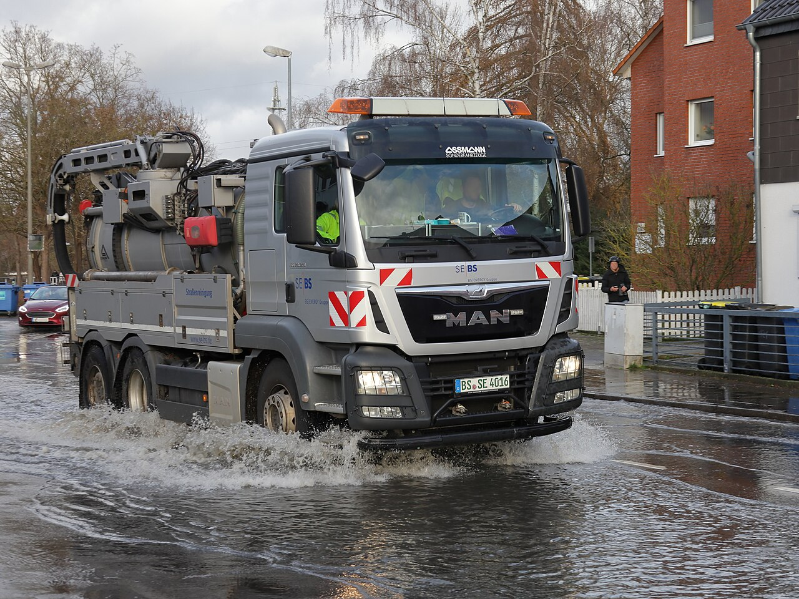
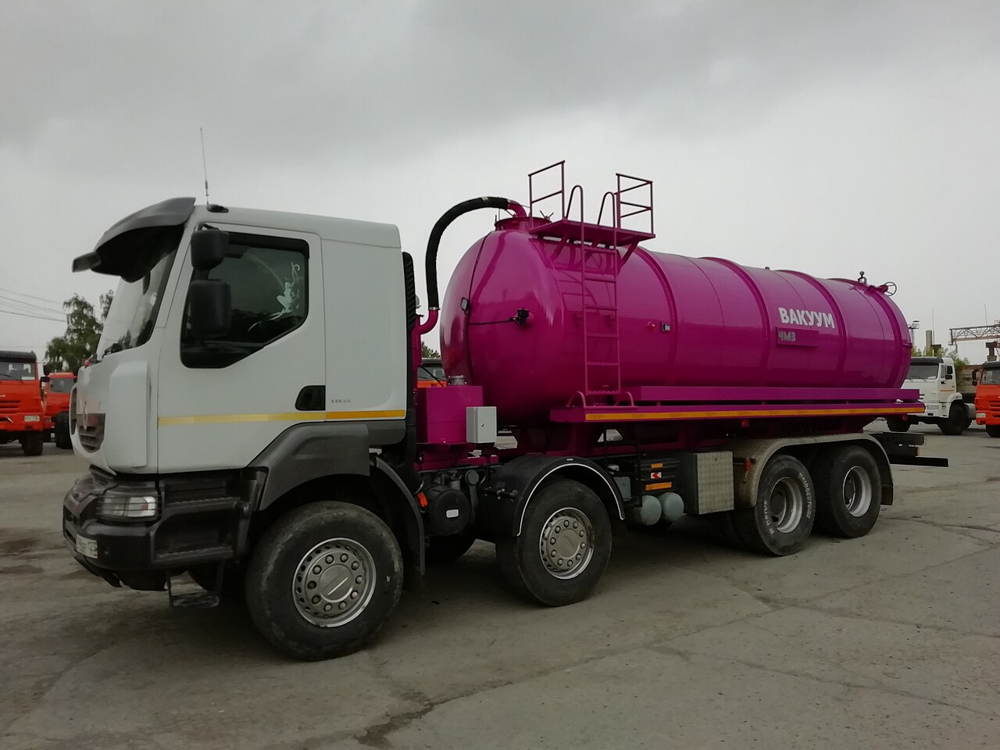
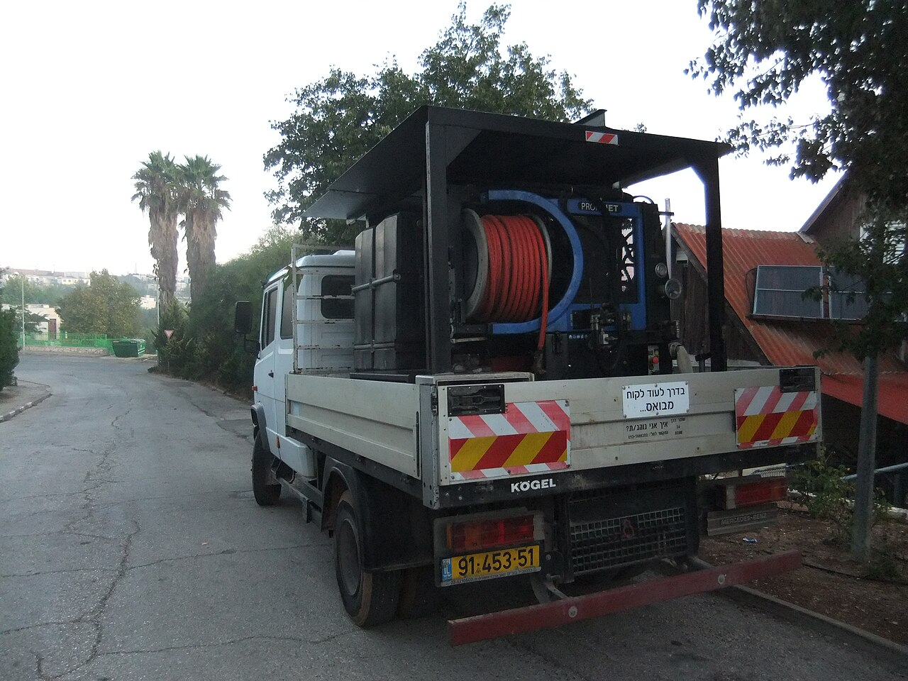
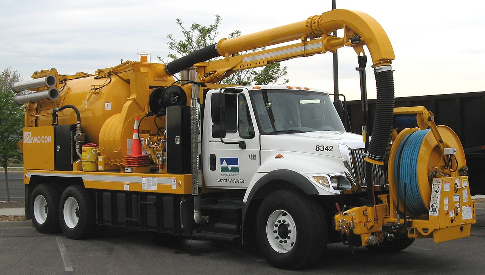

HİZMET GÜVENVİDANJÖR

Antalya'da Profesyonel
Vidanjör Hizmetleri
- Hızlı Müdahale
- Uygun Fiyat
- Kesin Çözüm

Altyapı sorunlarında 7/24 hızlı, temiz ve güvenilir çözüm.
Foseptik çekimi, kanal açma, logar temizliği ve tıkanıklık... Gece gündüz arayın, en yakın aracımız hemen yola çıksın.
HİZMETLERİMİZ
Size uyanı seçin, doğru hizmete gidin.
Hizmetlerimiz
Vidanjör ve altyapı temizliğinde ihtiyacınız olan her şey.




Logar Tıkanıklığı Açma
Logar açma ve temizleme; rögar ve yağmur suyu hatları. Son teknoloji cihazlarla.
İncele →Yağ Tutucu Temizleme
Yağ tutucu çekme ve temizleme. Restoran, otel ve işletmelere düzenli bakım.
İncele →Araç ve Cihazlarımız
Her işe uygun ekipman.
Vidanjör
Vakumlu tankıyla foseptik, logar ve yağ tutucu içindeki atığı çeker.
Kombine Kanal Açma Aracı
Basınçlı su ile hattı açar, aynı anda vakumla atığı çeker.
Kuka Kanal Açma Aracı
Yüksek basınçlı su jetiyle kanal ve rögar hatlarındaki tıkanıklığı açar, hattı yıkar.
Kanal Açma Robotu
Dar borulardaki tıkanıklığı kırmadan dökmeden açar.
Kanal Görüntüleme Cihazı
Borunun içini görüntüler, tıkanıklığın ve arızanın yerini gösterir.
Bölgelerimizden
Her ilçe için ayrı sayfa — Google'da "ilçe + vidanjör" aramalarında çıkmak için.
Muratpaşa'da 7/24 Foseptik Çukuru Çekimi ve Temizliği
Muratpaşa ve çevresinde konut ve iş yerleri için hızlı foseptik çekimi...
Devamını oku → Kepez · Kanal AçmaKepez'de Tıkalı Kanal Açma
Tuvalet, lavabo ve ana hat tıkanıklıklarında kırmadan dökmeden çözüm...
Devamını oku → Konyaaltı · Logar TemizliğiKonyaaltı'nda Logar ve Rögar Temizliği
Yağmur suyu hatları ve logarlarda taşma olmadan önce temizlik...
Devamını oku → Döşemealtı · Yağ TutucuDöşemealtı'nda Restoran ve Otel Yağ Tutucu Temizliği
Mutfak yağ hatları ve seperatörlerin düzenli temizliği...
Devamını oku →Sık Sorulan Sorular
Foseptik ne sıklıkla çekilmeli?
Kullanıma göre değişir; genelde 6–12 ayda bir önerilir.
Gece ve hafta sonu geliyor musunuz?
Evet, 7/24 hizmet veriyoruz.
Ne kadar sürede gelirsiniz?
Bölgeye göre değişir; aradığınızda varış süresini söyleriz.
Fiyatı nasıl öğrenirim?
Arayın ya da WhatsApp'tan fotoğraf gönderin, hemen bilgi verelim.
7 gün 24 saat açık